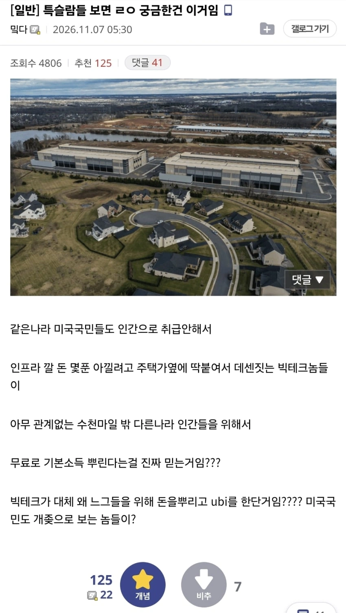

그리고 자유에 대해 좀더 생각해보라는게 뭔소리임?
한국이 독재정권 시기에 경제가 확실하게 발전되고 있어도 민주주의를 부르짖는 사람들이 없었을거라고 생각함?
독재자가 기업들이 될 뿐이지
스타트렉에는 돈의 개념이 사실상 없어진 세상이 묘사되는데 그건 '생산수단'인 물질재조합기로 뭐든 만들어내기 때문이지 기본소득을 타서 그 한도내에서 소비활동을 해서가 아님
밑도끝도없이 기초소득이라는게
빠저나갈 구멍을 만든 더러운 비유라
참 할말이 없네
5만원줘도 기초소득이니까
가불기 만들어놓고 맘껏 개소리하는거라 이게 참
반박하기 뭐하네
특이점인데 인간이 인공지능을 통제할수 있겠냐..
애초에 머스크고 나발이고
ai를 통제할수 있을거라 생각하냐
지금이야 자원이 한정적이지만 그쯤되면 제한없다고 봐야됨
미래에 공기 독점 할거라 걱정할일 없는것 처럼
어차피 AI발전은 예견된 사실이니 그냥 즐기는사람 모드인거지
그러면 부정적이라서 니가 뭘 대응할 수 있는데? ㅋㅋㅋㅋㅋㅋ
러다이트라도 할꺼냐고 ㅋㅋㅋ 어차피 쫄려서 못하는데 어쩔꺼임 ㅋㅋㅋㅋㅋㅋㅋ
삼성전자 하이닉스 주가를 보니 '개인 한 두 명' 이 아닌거지 그들이 뭉친 집단이 이미 대응하고 있음
전세계 금융자본들이 투자금 다 당장 회수하려고 하면 자생가능함?
금융자본가들이 AI가 거품이 아니라고 생각했으면 개인들이 던진걸 다 주워갔겠지
최종 투자자들인 '개인'들이 거품이라고 생각하니 그 의견들이 반영되어 투자은행들이 AI 관련 기업들의 적정 주가를 이 가격대에 잡아놓는거임
저거 아마존 데센이라매ㅋㅋㅋ
투표권이 있는 국민
투표로 뽑히고 군대를 손에 쥔 정치인
UBI는 총칼에서 나오는 건데
기본소득은 특이점까지 가는 과도기를 넘기기 위한 일시적 대책이지 않나?
진짜 특이점 오면 다 무의미하지
탈희소화 ㅇㅈㄹ하는데 특이점이 오면 굳이 인구를 늘리고 유지할필요도 없는거 아닌가? 복지 자체가 의미를 잃는데 그냥 돈있는 소수만 인간취급받고 그 밑은 알아서 뒤지겠지 뭐
너 논리면 지금은 근로능력 없는 노인들 왜 싹다 잡아다 안죽여버리고 살려둠?? 특이점 오면 갑자기 인간들이 사탄새끼들로 변신하기라도 함?
1. 본인돈가지고 사는 사람은 딱히 죽일필요없다고 생각함
그냥 너가 그런 생각을 가지고 있기때문에 이런소리하는거뿐임
2. 특이점은 ai인거지 인간이 특이점 오는거 아님
왜 디스토피아론 펼칠라믄 끝까지 가보든가 몇푼 있는돈 가진사람들것도 다뺐어서 인간 그냥 100명 이하로 줄이고 거의 멸종상태로 만들어버리지뭐 이건 왜안됨??? 하 디스토피아 믿던말던 어차피 곧 몇년있음 대풍요시대에 같이살아갈텐데 네 마음대로 믿던말던 알아서 해라 너만 만성위염걸리겠지
기업이 돈을 놓겠냐고 ㅋㅋㅋ 대풍요시대 ㅇㅈㄹ하네 규제없었을때 돈없으면 애새끼도 굴뚝청소하라고 쳐박는게 인간이다 그땐 그래도 국가가 기업보다 쎄니까 규제라도 가능했지 ai특이점 도달하면 그걸 가진 기업이 국가보다 쎄지잖아
그렇게 생각하면 뛰쳐나가서 막아 디스토피아 망상충아
누가안된다고함? Ai특이점오면 쌉가능인대
Ai가 특이점왔을때 그 ai가 울트론이나 스카이넷의 성향에 안갈거라고 100% 확신가능함? 뭔 근거로?
인간은 동물이라 원래 이기적임
지금 근로능력 없는 노인들 살려두는건 인권이라는걸 어쩔수없이 유지해야하니까 그러는거지
노인 다 죽일 정도로 생사여탈권을 권력층이 갖고 있으면 지금 일반 시민들이 가만있겠니
시민들이 없으면 현대는 아무것도 돌아가지 않으니 어쩔수가 없음
근데 특이점 오면 시민들이 없는게 오히려 편함 똥싸는 기계들일 뿐이니까
노인들 살려두는게 인간은 존중받아야 되니까 그러는 거겠니
그럼 푸틴은 왜 청년 수십만 갈아버리면서 전쟁하겠니
탈희소성이 핵심인데 놓치고 있는 듯. 자원 생산 비용이 0이 되는데 굳이 돈 들여서 사람 지우고 반란 리스크 감수하는 게 권력자 입장에서 훨씬 불합리함 또 푸틴 예시가 오히려 반증임. 그 독재자조차 체제 유지 비용 때문에 눈치 보는데, 자원이 차고 넘치는 시대에 굳이 피 볼 이유가 전혀 없음. 남을 해치는 건 자원이 부족할 때 얘기임. 인간이 이기적이니까 더더욱 학살 안 함. 멀쩡히 통제되는 사회에서 자원 쏟아부어 대규모 폭동 유발하는 것 자체가 이기적인 실익에 완전히 위배되거든.
생산비용이 0이면 사람 지우는 리스크도 그렇게 크지 않음 로봇과 군사무기도 발달해 있을텐데
경제적인 효과만 생각하면 뭐 사람 지우는게 조금 더 비용이 들겠지만 어차피 자원 무제한인데 그런 비용은 일도 아닐거같고
복지 관리해주고 민주주의든 뭐든 체제 관리해야되고 여론도 있고 하는거 놔두기보단 삭제가 편할듯
통제야 어느 정도는 되겠지만 결국 기어오르거나 난리치는 애들이 있기 마련인데
토지 같이 어쩔수없이 한정되는 자산도 인간 놔두면 배분에 골치아프고
현대의 예시들은 다 무의미함 난 그저 딱 인간의 이기심만 표현하려고 푸틴을 가져온거지 현대는 비용이 중요하고 인간의 노동이 중요하기 때문에 모든 전제가 다름
무조건 디스토피아가 온다는건 아니지만 앞으로 법적 제도적 방어장치들이 아주 잘 만들어져서 인간 삭제의 리스크를 유의미할정도로 확 키워주지 않으면 현 상태정도로는 확률을 더 그쪽으로 봐야겠지
지금 죽으면 미래에 어떤 고통도 없는데 왜살아야되냐는 질문에 본질적으로 설득을 할 수 있겠어? 넌 지금 이러고 있는거야. 참 도대체가 믿도 끝도 없는 패배주의와 허무주의네
전혀 아니고 그냥 현실적이고 논리적으로 말하는 것 뿐
비현실적이고 비논리적으로 말하는 것보단 낫잖아
그런 맥락없는 질문이 아니라 다 근거를 달아놨는데 니가 말문이 막힌 것 뿐이잖아
그리고 그 질문에도 굳이 답변하자면 죽는 것도 고통이고 죽으면 현재와 미래의 행복을 잃는데 그 여러 요소들을 저울질해서 합리적인 쪽으로 선택하는게 옳지
만약 미래에 고통이 예상된다면 지금 죽는것보다는 끝까지 뭐라도 시도하다가 죽는게 보통 합리적이겠지
고통이 발생할 확률과 그걸 극복할 수 있는 확률을 정확히 알 수 없다면 아무런 시도조차 못하는 선택보단 시도라도 해보는게 본능적인 선택에 가까울테니
자원이 무제한인데 굳이 하층민 지우겠다고 사회적 불확실성이랑 대규모 폭동 리스크를 감수하는 게 오히려 제일 비합리적임.
학살 터지면 당장 로봇/AI 관리하는 기술자, 기득권 내부에서도 '다음은 나인가?' 하고 폭동 일으키는데, 걍 빵이랑 넷플릭스 쥐여주고 조용히 살게 두는 게 훨씬 쉽고 통제 비용도 안 듦. '귀찮으니 삭제가 편함'은 논리가 아니라 그냥 디스토피아 뇌절임.
권력층이 제일 이기적인 건 '본인 안전과 기득권 유지'임. 자원이 넘치는데 굳이 수억 명을 학살해서 세상 전체를 피바다 전장으로 만드는 미친 리스크를 권력자가 왜 짊어짐?
학살보다 그냥 가상현실이랑 기본소득 던져주고 얌전히 놔두는 게 권력층 안전에 훨씬 이득인데, 혼자 냉철한 척 기득권이 사이코패스 학살자인 줄 아네.
토지 한정 때문에 인구 삭제한다는 것도 웃긴 게, 기술 특이점 올 정도면 해상도시, 우주 개척, 극지방 개발로 거주지 넘쳐남.
본인이 생각하는 '합리적 현실'이 사실은 사회 시스템 작동 원리나 권력자의 리스크 관리 계산은 싹 무시한 1차원적 영화 속 악당 논리라는 걸 모르는 듯.
ㄴㄴ 빵과 넷플릭스로 통제비용 완전해결이라는 건 너의 망상이지
폭동과 같이 다른 비용적인 요소들은 없는건 아니지만 잘 해결하면 되는 문제고
이것도 무조건 학살이 합리적이라고 보는건 아닌데 권력층 안전에 더 이득이라고 보는 전제들이 잘못돼서 하는 말이지
하층민들도 이기적인 인간이라 욕심은 끝이 없고 통제비용은 어디까지 커질지 알수없음
오히려 단기적인 비용이나 리스크가 있더라도 확 제거해버리는게 영구적이고 절대적인 안전을 가져올 수 있겠지
난 그냥 현상태에서 알 수 없는 부분들을 얘기하면서 확률적인 얘기를 하는거고 무슨 필연 합리 운운하면서 미래 예지하는 애들이 우스울 뿐
그럴수도 또는 아닐수도 있다는걸 인정하면 되는데
'하층민 싹 지우면 영구적이고 절대적인 안전'이라는 것 자체가 1차원적 망상임. 외부 적(하층민)이 사라지면 권력층 내부, AI/로봇 관리하는 기술 엘리트층끼리 다음 숙청 대상 안 되려고 서로 찌르고 싸우는 게 인간의 역사적 이기심임.
조용히 빵이랑 넷플릭스 줘서 멍청하게 만드는 건 역사적으로 검증된 통제법인데, 검증도 안 된 대학살로 체제 자체를 붕괴 리스크에 밀어 넣는 걸 '현실적 확률'이라고 부르진 않음.
자기가 정한 디스토피아 전제는 '현실적 팩트'고, 남이 말하는 검증된 사회 통제 기법은 '망상'이라 치부하면서 마지막엔 "그럴 수도 아닐 수도 있는데?" 하고 발 빼는 게 딱 전형적인 쿨병 패턴임.
영구적 안전을 위해 대규모 학살을 저지르는 게 권력자 입장에서 제일 리스크가 큰 미친 짓이라는 걸 인정하기 싫어서 확률론 뒤에 숨는 거로밖에 안 보임.
하층민 다 없애면 권력자 자기들끼리 영원히 평화로울 거라는 생각이 제일 비현실적인 무협지 소설임. 진짜 이기적인 권력자라면 체제 붕괴 위험 0%인 빵과 서커스(기본소득+엔터) 두고 그런 하이리스크 학살을 선택할 이유가 없음.
빵과 서커스로 체제 붕괴 0으로 만드는게 역사적으로 검증됐다고? 언제를 말하는건데 그러니
아까 말했듯 기존 역사는 기본적인 전제가 다르기에 또 다르게 접근해야겠지만 뭔 소리를 하는건지
다른 얘기에 답하자면 권력층이 어떻게 구성될지도 모르고 그때도 기술 엘리트층이 존재할지는 모르겠지만 권력층이랑 동일하게 지위 가져가면 될텐데 암튼 그 내부적 갈등은 어차피 하층민이 있어도 체제적으로 해결봐야하는 것임
그 체제는 어차피 완벽하게 손을 봐야하고 하층민의 존재여부는 그것과 전혀 연관이 없음
지금 AI랑 대화하는거같아 좀 그렇지만 암튼 보이는 내용에 답하는거니 뭐
존나 이해할수없는게 너같은말하는애들보면
자원이 무한하다는 전제 하에 이딴소리 지랄하는대
대체 왜 무한인거임?
무한일리가없잖아
머가리가 텅텅 비었다는게 이거 한마디에서 바로 끝나는구만 뭔
80억이 자원쓰는거보다 1억이 자원쓰는게 무조껀 압도적으로 유리한대
하층민을 대체 왜 위해주냐고 빡대가리야 좀
니새끼의 논리의 시작이 좆병신이니까 이무리 말해도 아무 의미가 없지
무슨 ai가 생산을 해준다는게 태양열에서 철 구리 석유같은걸 만들어내는줄알아
그냥 생산 공정이 자동화되는거야
사람이 생산하던걸 그냥 기계가 하는거뿐이야
자원을 만들어내는게 아니라
유한한 자원을 캐는걸 사람이 아니라 기계가 하는거라고
부자들이 기득권을 유지하는 방법이
니새끼에게 돈뿌리는거보다
자원을 꽁꽁 숨겨두는게 더 쉽다고 멍청아
뭔 죽창타령이야 기술이 그렇게까지 발전했는대
기업과 개인간에 사용하는 가술수준 차이를 시발 생각을 안하나
뭔 둘 다 소총들고 길에서 시가전하겠니? 개빡통아
아 존나 깝깝하네 이런애들보면
그런 믿겨지지않는 일이 일어나는게 특이점 이후야 그냥 씨발 특이점이 뭔지 찾아보고 남한테 욕하는 댓글을 달아 병신아
아니 씨발 병신아 특이점이고 지랄이고 자원은 무조껀 유한하다고
아 이게 그렇개 알아듣기 어려움?
불알만한 니 뇌에서 쳐 씨부리는거 더이상 못듣겠고 안찾아볼꺼면 이제 아가리해라
내 말에는 답을 안하는구나
내 마지막 댓글을 지피티한테 물어봐도 같은 대답을 하겠지만 그건 귀찮아서
평행선계속 달리는데 뭔 대화야 그냥 너는 디스토피아론 믿고 나는 유토피아론 믿고 그렇게 살자
뭔 평행선... 계속 질답으로 조금이라도 진행되고 있었는데 안읽고 ai로 답변시켜서 이해 못했구나
아무튼 마지막 그 질문 예시좀 부탁했는데 못찾았겠지 아마? 할루시네이션인거같은데
암튼 화이팅 해라 더 답변하기 싫은듯하니
평행선 달린다는것도 동의를
못하면서 뭔 질답으로 진행되고있다는 드립을하냐 ㅋㅋㅋㅋㅋㅋ
개병신새끼 대답 못하고 도망가는거봐
뭔 자원이 무한이야
스타크래프트 무한맵에서도 자원은 무한이 아닌대
아직도 탈희소성 검색 안함? 진짜 고집 개쎄네
검색해봄
설마설마했는대
우주가서 자원가져오자같은 병신같은 소리를 지금
아니 시발 빛의 속도로 가도 안되는 문제인대
자원을 가져오는게 배보다 배꼽이 더 커지겠네 씨발
심지어 꼴랑 예상임 ㅋㅋㅋㅋㅋㅋ
에이 씹버러지새끼 꺼저라 그냥
특이점에 대해서 이야기하는데 그럼 예상을 하지 지금 현실에 대한 이야길 하냐? 저능아새끼
아니 씨발 최소한 물리학에선 벗어나면 안되지 씨발새끼야
뭔 핍진성이란건 혹시 뭔지 아니?
뭔 특이점이 마법인지아나
그냥 좀 꺼져 너한테 특이점 믿으라고 안해 그냥 너가 생각하고 믿는데로 살아
아니 시발 이유를 설명하라니까 특이점은 마법이야~자원이 무한이야~
이게 시발 이유랍시고 떠들어대는 병신이 무슨 그냥 꺼져
AI 지능이 지수적으로 발전하면 자원의 생산·채굴·가공·에너지 효율까지 전부 가속화될 수밖에 없음. 결국 인간의 지능과 노동력이 생산의 병목이었던 시대가 끝나고, 기술 발전이 물리적 생산비용을 계속 낮추면서 지금은 희소한 자원도 점차 풍부해지는 방향으로 갈 수밖에 없는 거임. 탈희소성은 단순한 희망사항이 아니라 AI가 만들어낼 생산성 혁명의 논리적 귀결임.
자원효율화를하고 뭘 한들 자원은 유한하고
그게 지금 아프리카에 숫자도 모르는 인간들에게 평등하게 갈거냐가 말이 되냐는거지
난 양극화가 더 심해질거라는거임
특이점이 온들 Ai를 평생 모르고 살 사람이 분명이 존재하고
그걸로 막대한 부를 쌓는 사람도 분명나오는거임
Ai특이접이온다고 ai가 모든 인간에게 평등하게 자원을 줄거야?
그게 말이 됨? 주는 사람은 병신이라서 자기꺼 그냥 막 줌?
그리고 니가 말하는 자원의 효율화는 지금도 이루어지고있는중임
특이점이 온다고 달라지는게아니라 특이점이 오기 전까지도 그 부분은 발전을 할거임
근대 지금 꼬라지는? 굶어죽는 사람이 존재하잖아
물부족인구가 얼마나 많은지는 아냐?
그게 미래에 특이점이 온들 크게 바뀌지않는다는거지
Ai가 사람을 다 죽이지않는 이상 사람이 변해야하는건대
그 사람이 변하는게 뭐 특이점이온다고 사람 뇌가 갑자기 빌전을 하냐고
나가 말하는 특이점 이후의 이야기는
그냥 모든 인간이 공리주의를 위해서 살아가는 동물이 되어야하는거야
모든 인간이 큐베같이 되어야한다고
다를 위해 소는 다 뒤져야 가능한 이야기임
그게 좋은거라면 할말없음
난 그따위로 살거면 파리목숨이라도 사펑2077이 나음
그래 여기까지하자 이정도면 서로 믿음의 영역임
나는 실제로 생산량 폭증 뿐만 아니라 정치적 의사결정 과정 포함 모든 인간의 권한을 위임할 수밖에 없는 초지능의 탄생을 예상하고 또 바라기도 함
너는 디스토피아론을 이야기하고 나는 유토피아론을 이야기함
더이상 서로 설득시킬 순 없다고 생각함
오겠냐 절대 안오지.
머스크 부터가 스페이스X 테슬라 합병하는게 지 지분때문이거든?
그리고 테슬라 단계별 옵션은 뭐 돈 싫어해서 걸었냐?
지금 수백조 쳐 바르는 AI기업들은 뭐 공공복리를 위해 일하고?
다시바 개잡소리지 그거.
중국의 공동부유 같은거지
ubi는 체제의 안정을 위해 잠깐 쓰는 임시방편일 뿐
빅테크의 선의라는 관점으로 접근하면 안됨.
서비스 공급이 시스템 유지와 직결되는데
시스템 유지란 지배와 비슷하기 때문이지
시스템 인프라가 깔리면 대체하기가 불가능하거든
그래서 한국이 디지털주권 기술주권에 목메는거고 현대가 클때까지 막고있는거임
물론 정치인 기득권 기업인들의 독점이나 사적 이익도 연관되어있는것도 사실이지만 생존도 얽혀있고, 인간의 존엄성을 목표로 해야하는것도 당연함
기업은 계속 크게될것이고 사람들에게 주는 기초 서비스는 그렇게 어려운건 아니게될거임.
어차피 기업들은 우주로 가서 다 먹을거거든
그래서 무료가 아닌거임
기업 서비스가 시스템을 지배하는 순간부터 막대한 이득을 가지는거임
다른 개붕이가 적어놨지만 세계 곳곳에 발생되는 기근은 인류가 생산하는 식량의 총량이 부족하기 때문이 아니라 돈때문에 초과생산량을 그냥 갖다버리기 때문임. 그 식량 생산자들도 자신이 투자해 넣은 돈이 있기때문에 공짜로 아프리카에 갖다주면 본인들이 들인 돈이 그냥 날아가기 때문임. 누가 음식들을 목적지에 순간이동시켜서 썩을 시간도 없고 유통비도 전혀 안나가더라도.